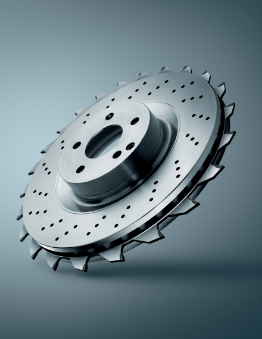

Сэкономил — потерял
Чем вы рискуете, пользуясь неоригинальными запчастями?
В попытке сэкономить некоторые автовладельцы устанавливают более дешевые альтернативные запасные части. Однако часто это не приносит никакой выгоды. Благодаря оригинальным деталям, напротив, автовладелец получает ряд важных преимуществ.
Время
Использование оригинальных запасных частей позволяет сэкономить массу времени. С установкой неоригиналов время теряется трижды: на установку детали, внеплановый заезд на СТО в случае неисправности, монтаж новой детали или ремонт. В одном из случаев аналоговый фильтр осушителя пропускал влагу, которая скопилась в пневмосистеме и с наступлением холодов заледенела, разрушив 4-контурный кран. Водитель не знал, почему не разблокируется ручной тормоз и не переключаются передачи, и вызывал эвакуатор для доставки машины на СТО. А затем был долгий процесс диагностики и восстановительных работ. Впрочем, потерять время можно уже на этапе заказа неоригинала по каталогу: может прийти не та деталь, которая нужна. Тогда придется оформить возврат и снова ждать, когда доставят новую деталь.
Деньги
Иллюзия экономии денег зачастую толкает людей на установку альтернативных запасных частей. Однако даже неоригинальная расходная деталь, несмотря на свою простоту, может дорого обойтись автовладельцу. Например, если альтернативный масляный фильтр за пару тысяч рублей порвется во время работы двигателя, что приведет к разрушению блока цилиндров и ремонту стоимостью более миллиона рублей. А после установки неоригинального лобового стекла не работает система омывателя или датчик дождя. В непогоду на трассе эти «мелочи» могут привести к аварии. Кроме того, практика автовладельцев и тесты производителей показывают, что срок эксплуатации неоригинальных расходников меньше, чем у оригиналов. Сэкономив в момент покупки, на очередную замену детали придется потратиться гораздо раньше, чем при использовании оригинала. Дополнительную выгоду у официальных дилеров дает программа лояльности.

Официальная
гарантия
По закону водитель может проходить обслуживание автомобиля в любом СТО. Но официальный дилер не может отвечать за качество установленных неоригинальных деталей и работу другого ремонтного центра. Если причиной поломки в автомобиле стали именно эти два фактора, дилер может отказать в гарантийном ремонте. Очень рискованно использовать даже неоригинальное моторное масло и фильтр, так как это может привести к дорогостоящему ремонту двигателя, который не покрывается гарантией изготовителя. В то же время на оригинальные запасные части действует гарантия два года. К тому же они более устойчивы к воздействию несертифицированных моющих средств, а в случае потери изначального вида их заменят по гарантии.
Безопасность
Одно из самых важных преимуществ, которые дают оригинальные запасные части, — это безопасность. Иногда автовладельцы экономят на деталях, которые требуют частой замены: тормозных колодках и дисках, — однако так они напрямую влияют на эффективность торможения. Тесты показывают, что некачественные колодки увеличивают тормозной путь в среднем на 2,6 метра. В практике официального сервисного центра был случай, когда неоригинальные тормозной диск и колодки разрушились и заклинили заднее колесо. Такая деталь, как колесные диски альтернативного производителя, тоже таит угрозу. Они быстро деформируются и могут лопнуть на ходу, не выдержав нагрузок.
Синергия
В автомобиле все узлы и детали взаимосвязаны, а слаженная работа всех элементов системы даёт эффект синергии. Вышедшая из строя или не справляющаяся со своими функциями неоригинальная деталь может нарушить баланс и запустить целую цепочку поломок в автомобиле. Например, масляный фильтр, разрушаясь, может своими частицами забить масляную систему, это чревато тем, что от трения и перегрева сорвёт шатуны. А результатом установки некачественного сцепления может стать поломка маховика, который ранее не требовал замены. Оригинальные детали — это дополнительная гарантия надежности системы.
Уверенность
Устанавливая оригинальные запасные части, вы можете спокойно довериться производителю и его авторитету. Солидные автоконцерны дорожат своим брендом и следят за тем, чтобы детали соответствовали заявленным техническим характеристикам. В случае, если в каком-то из узлов выявляют неисправности, производитель объявляет отзывную кампанию, в том числе уже проданных автомобилей. Установка же неоригинальных запасных частей — игра в счастливый случай. На рынке альтернативных комплектующих часто встречается контрафактная продукция и заводской брак, а поставщики могут не предоставить гарантию вовсе или предоставить на минимальный срок. По словам автовладельцев, устанавливать аналоги им приходится на свой страх и риск.